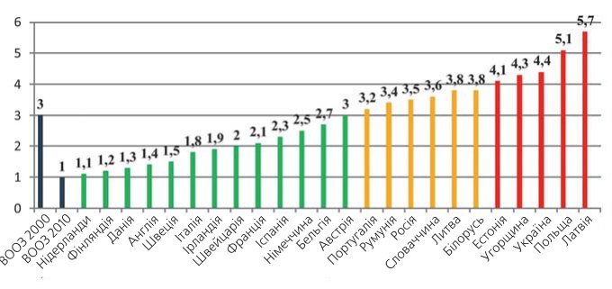
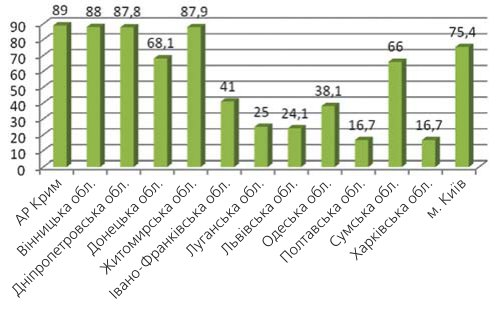
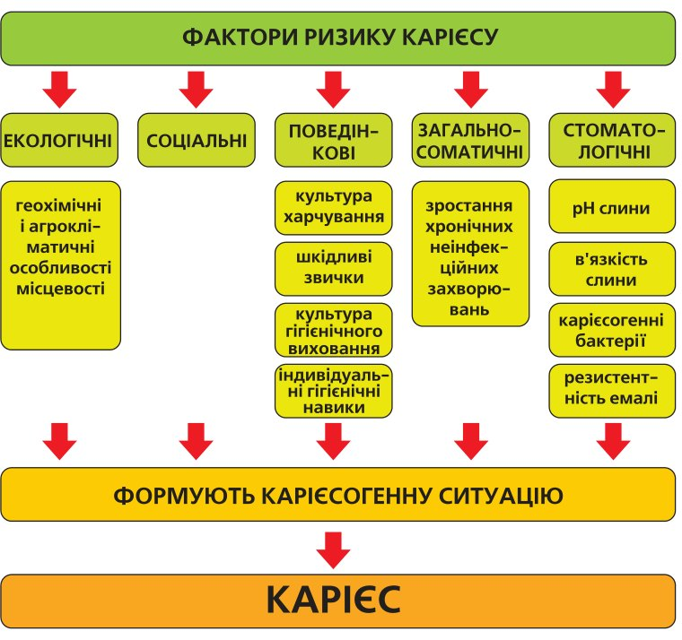
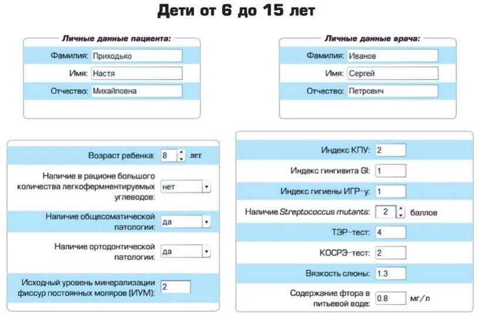
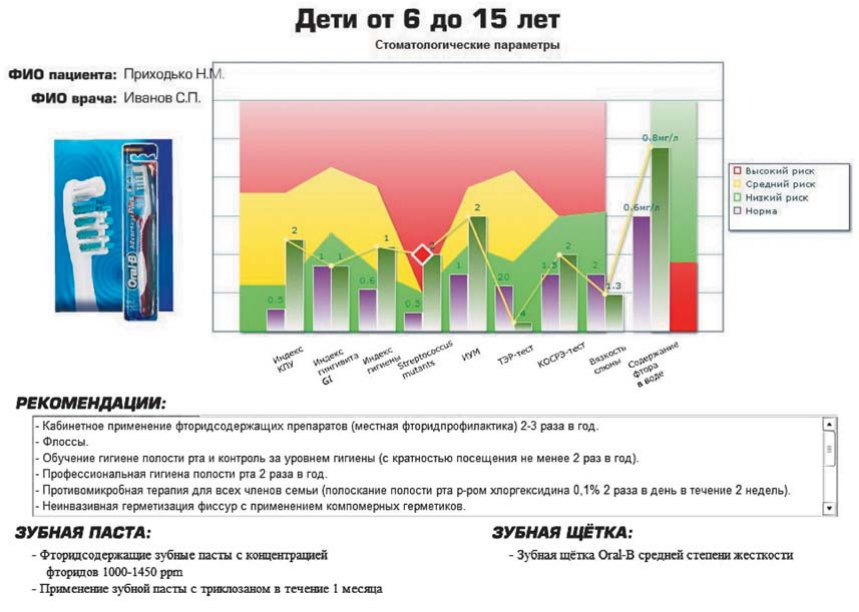
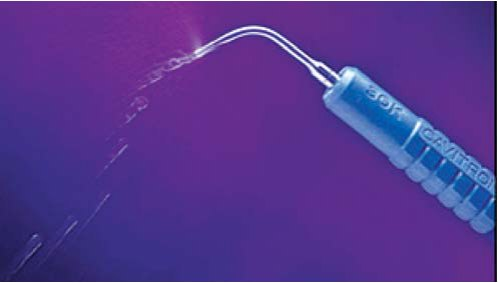
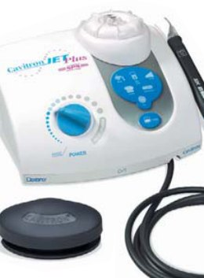

Наука · журнал «ДентАрт» 2013 №2 (71)
Сучасні підходи превентивної терапії карієсу зубів
MODERN TECHNIQUES OF CARIES PREVENTION
Карієс був і залишається найпоширенішим захворюванням людини, ним страждає близько 98% населення.1 Це твердження не втратило своєї актуальності і донині.
Розвиток людини, її активна діяльність призводили до постійної зміни довкілля, і не завжди в кращий бік, і тепер ми говоримо про так звану антропогенну дію несприятливих чинників зовнішнього середовища, які разом з нераціональним харчуванням людини набули статусу факторів ризику, що реалізовуються в зростанні як загальносоматичних захворювань, так і карієсу зубів.
Незважаючи на велику кількість сучасних засобів гігієни порожнини рота, застосовувані сьогодні підходи до профілактики і превентивної терапії карієсу зубів, на жаль, не впоруються з переважаючим впливом факторів ризику.
Подані на мал. 1 дані про інтенсивність карієсу в країнах Західної, Центральної і Східної Європи в 1995 році ілюструють тенденції у досягненні глобальних цілей ВООЗ до 2000 і 2010 років. У 1996 році більшість країн вже досягла цілей 2000 року, добившись стійкого зниження КПУ у дітей віком 12 років.2 В Україні показники поширеності карієсу зубів у дітей залишаються стабільно високими (мал. 2).


Сучасні підходи до створення профілактичних програм, у тому числі і програми профілактики карієсу зубів, ґрунтуються на теорії ризиків. Управління ризиками, ризик-менеджмент — процес прийняття і виконання управлінських рішень, спрямованих на зниження вірогідності виникнення несприятливого результату і мінімізацію можливих втрат, викликаних його реалізацією.
Ключовим етапом ризик-менеджменту вважається етап вибору методів і інструментів управління ризиком. Основний інструмент ризик-менеджменту в медичній практиці — профілактика або диверсифікація (метод зниження) ризиків.
Аналіз ризиків формування і прогресу стоматологічних захворювань з використанням джерел доказової медицини дозволяє виділити групи найбільш значущих чинників:
- соціально-економічних;
- ендемічних і екологічних (вміст фтору в питній воді, екологічне благополуччя регіону і антропогенні впливи та ін.);
- асоційованих з моделлю надання медичної допомоги;
- асоційованих з моделлю поведінки;
- медичних: асоційованих зі спадковою схильністю; особливостями будови щелепно-лицьової системи; особливостями функціонування щелепно-лицьової системи; загальносоматичними станами і захворюваннями; формуванням карієсогенної ситуації.
Екологічні чинники ризику, що характеризують середовище мешкання людини, включають геохімічні і агрокліматичні особливості місцевості, хімічний склад води, ґрунту, повітря, їжі, впливають на рівень захворюваності карієсом зубів у населення.3, 6, 9, 12, 14, 20, 26-28
Соціальні чинники ризику обумовлені економічним рівнем держави і рівнем матеріальної забезпеченості окремої людини.
Загальносоматичні чинники ризику з кожним роком посилюють свій вплив на формування стоматологічної патології, передусім карієсу.13 У 2011 році рівень поширеності хронічних неінфекційних захворювань у дітей в Україні збільшився на 5,4% порівняно з 2010 роком.29
Поведінкові чинники ризику (культура харчування — часті «перекуски», вживання легкозасвоюваних вуглеводів), низький рівень культури індивідуальних гігієнічних навичок виникають через відсутність достатнього контролю за звичками і поведінкою в сім'ї.
Стоматологічні чинники ризику включають: властивості слини і ротової рідини, кількість карієсогенних мікроорганізмів у ротовій порожнині і в зубній біоплівці; вміст ферментів, макро- і мікроелементів у ротовій рідині, резистентність і зрілість емалі, особливості одонтогліфіки.
Усі перераховані чинники ризику, незважаючи на різницю у силі впливу, спільно характеризують карієсогенну ситуацію в ротовій порожнині.

Підсумовуючи сказане, слід зазначити, що управління факторами ризику, їх усунення або зменшення їх впливу — основне завдання лікаря-стоматолога. На жаль, зусилля стоматолога впливають лише на керовані фактори ризику, залишаючи поза сферою його діяльності екологічну ситуацію і соціальні чинники.
Упровадження методів профілактики стоматологічних захворювань здійснюється на індивідуальному, груповому і комунальному рівнях.15-17
Говорячи про можливості лікаря-стоматолога впливати на керовані фактори ризику, а саме поведінкові і загальносоматичні, слід зробити акцент на курації дитини від початку прорізування зубів.
Перший Дружній стоматологічний візит — у перший день народження (12 місяців) — вирішує багато завдань і є основою для впровадження методів профілактики на індивідуальному рівні. Тісне спілкування з дитиною і її батьками дозволить виділити фактори ризику, які в подальшому можуть призвести до розвитку стоматологічних захворювань, і призначити режим наступних відвідувань з урахуванням цих факторів для контролю і подальших рекомендацій.
Результатами Дружнього візиту є:
- формування емоційної компоненти — під час Дружнього стоматологічного візиту формується довіра, співпраця з батьками і їхнє розуміння необхідності виконання усіх рекомендацій;
- навчання матері догляду за ротовою порожниною малюка, умінню правильно вибирати і використовувати предмети і засоби гігієни ротової порожнини для дитини; методиці навчання дитини самостійній гігієні ротової порожнини і контролю стану гігієни ротової порожнини;
- формування бази пацієнтів, які з більшим задоволенням приходитимуть на регулярні прості профілактичні процедури, ніж періодично стикатися з болючими стоматологічними втручаннями (профілактичні процедури переходять в розряд стоматологічної послуги, що за своєю суттю є чесним і моральним шляхом підвищення добробуту стоматолога).
Таким чином, перший Дружній стоматологічний візит є передумовою для формування профілактичної стоматологічної послуги — основної складової системи індивідуальної профілактики стоматологічних захворювань.
Профілактична стоматологічна послуга — невід'ємна складова медичної послуги. У відповідності з визначенням, медичні послуги — вид взаємовідносин з надання медичної допомоги, урегульований угодою. Такий вид послуг (допомоги) надають як бюджетні, так і приватні лікувально-профілактичні установи. Угодою на надання профілактичної стоматологічної послуги є інформована згода пацієнта (батьків або опікунів дитини) або договір на надання медичної послуги.23
Широке впровадження профілактичної стоматологічної послуги можливе тільки шляхом створення ефективної моделі динамічного спостереження (диспансеризації).
На новому етапі розвитку стоматологічної науки і практики стає очевидною необхідність впровадження системи індивідуальної профілактики стоматологічних захворювань у формі стоматологічної профілактичної послуги і системи динамічного спостереження.
Алгоритм профілактичної стоматологічної послуги повинен включати методи об'єктивної оцінки стану факторів ризику. Сучасна діагностика факторів ризику припускає наявність міні-лабораторії на робочому столі лікаря-стоматолога: тестові системи для визначення параметрів слини, індикації зубної бляшки, виявлення в слині Streptococcus mutans, а також комп'ютерні програми комплексного прогнозування і оцінки ризику розвитку карієсу зубів, такі як «Ризик профайл» («Risk profile»), Акселлсон (Axellson), 2000; «Каріограма» («Cariogramma»), Братталл (Bratthall), 1997, Кисельникова Л. П., Таболова Є. Н., Мірошкіна М. В., Крикова Є. В., Щукін А. В., 20087, 18, 30, 31 (мал. 4, 5).


Мал. 4, 5. Комп'ютерні програми індивідуальної профілактики карієсу в дитячому віці (Кисельникова Л.П., Таболова Є.Н., Мірошкіна М.В., Крикова Є.В., Щукін А. В., 2008).
Передусім ці тести — хороші індикатори для лікарів і чудові інструменти для мотивації пацієнтів. Пацієнти бачать результат своїми очима і, як правило, охоче згоджуються з планом лікування — це гарна мотивація для подальшої співпраці. Такий підхід виведе спілкування з пацієнтом на новий рівень — заохотить пацієнтів відвідувати стоматолога регулярно, не боячись болю і дискомфорту.31
Крім того, проведення цих об'єктивних тестів переводить профілактичні бесіди з пацієнтом в розряд оплачуваної стоматологічної послуги. Завдяки системі динамічного спостереження — повторних оглядів, необхідності проведення як діагностичних тестів, так і лікувальних заходів — гарантована зайнятість лікарів і прибутковість стоматологічної практики. У подальшому об'єктивна оцінка чинників ризику розвитку карієсу зубів повинна лягти в основу протоколу проведення профілактики і превентивної терапії, тобто створення сучасних стандартів лікування карієсу зубів.
Превентивна терапія — відносно нова стратегія, що ґрунтується на стратифікації ризиків формування і прогресу захворювань і застосуванні методів запобіжного лікування з урахуванням рівня їх доказовості і ефективності.
Незважаючи на високий рівень розвитку сучасної стоматологічної індустрії і різноманіття пропозицій щодо систем реставрації, природні тканини зуба все ще є найліпшим стоматологічним матеріалом. Тому, як і раніше, актуальне застосування превентивної терапії, спрямованої на збереження максимального об'єму твердих тканин зуба.
Превентивна терапія — частина глобальної концепції мінімальної інтервенції, запропонованої світовій стоматологічній спільноті у 1998 р. (Маунт, 1998) і прийнятої як стратегія FDI у 2002 р.32
Повертаючись до моніторингу ВООЗ (мал. 1), слід звернути увагу на те, що більшість країн, котрі перебувають у сприятливій зоні щодо рівня поширеності карієсу, узяли за основу концепцію малоінвазивної терапії.
Сьогодні в Україні, де можливості стоматологічної служби, яка працює в екстенсивному режимі, вичерпані, де спостерігається відтік кадрів з дитячої стоматології — основної галузі стоматології, що займалася профілактикою, потрібний принципово новий підхід до профілактики, зміна парадигми. Концепція мінімальної інтервенції — результат розуміння глибших механізмів, які лежать в основі захворювання карієсом; розуміння того, що традиційний підхід є симптоматичним.
Методика є системою динамічного спостереження і ефективна лише у разі дотримання єдності усіх компонентів при лікуванні пацієнта.
Пропонований підхід орієнтований на пацієнта і включає 4 основні компоненти лікування:
- раннє визначення потенційних факторів ризику;
- усунення/зведення до мінімуму факторів ризику;
- відновлення демінералізованої емалі неінвазивними і мінімально-інвазивними методами;
- призначення режиму повторних відвідувань залежно від ступеня вираженості факторів ризику; повторний огляд — потрібний для підтримки оптимального стоматологічного здоров'я конкретного пацієнта; цей етап може бути включений в цикл у будь-який момент, залежно від необхідності.
З практичного погляду, спільна робота стоматолога і пацієнта передбачає такі етапи:
Крок 1. Виявлення
Стратифікація ризиків формування і прогресу стоматологічних захворювань:
- використання діагностичних тестів, які дозволять швидко перевірити рівень карієсогенних бактерій, рН і буферну здатність слини, її реологічні властивості;
- виявлення каріозних порожнин (рентгенографія, лазерна флуоресцентна спектроскопія).
Крок 2. Усунення або запобігання
Після того, як ризики встановлені, стає можливим робити рекомендації і вживати оптимальні превентивні заходи. Залежно від діагнозу, вони можуть включати стандартні заходи: гігієну ротової порожнини, корекцію раціону харчування, підтримувальну терапію, мотивацію пацієнта. У разі високих ризиків — додатково деконтамінація, ремінералізація, герметизація фісур. Одним з найефективніших методів профілактики карієсу зубів залишається гігієна ротової порожнини (як індивідуальна, так і професійна), яка дає можливість значно зменшити кількість карієсогенних мікроорганізмів у ротовій порожнині.
Професійна гігієна ротової порожнини із застосуванням апарату Кавітрон (Cavitron) від компанії Дентсплай (Dentsply) становить особливий інтерес. По-перше, лікареві-стоматологові для зняття різного виду зубних відкладень потрібно мало часу і зусиль, що значно полегшує його роботу. По-друге, забезпечується комфорт пацієнта, який не зазнає негативних емоцій при проведенні процедури. По-третє, магнітостриктивна технологія, застосована в Кавітроні, дає можливість з легкістю видаляти зубний наліт у важкодоступних місцях і одночасно зрошувати поверхню зубів антисептичним розчином. По-четверте, ефект кавітації, який виникає при застосуванні ультразвукових скейлерів, має оксигенуючу і дезінфікуючу дію на тканини. Вибір моделей Кавітрон широкий: від ергономічного і простого в роботі скейлера Бобкат Про (Bobcat Pro) з частотою 25 кГц, котрий як бюджетний варіант ідеально підходить для поліклінік і невеликих приватних кабінетів, — до багатофункціональних моделей Кавітрон Плюс ЕсПеЕс/ДжетПлюс ЕсПеЕс/(Cavitron Plus SPS/JetPlus SPS), незамінних помічників для лікарів-гігієністів, пародонтологів приватних кабінетів і клінік високого рівня. Використання багатофункціональних моделей забезпечує видалення зубного каменю і зубної бляшки, доступ до ділянки фуркації, простоту проникнення в зубоясенні кишені зі збереженням цементу кореня, проведення іригації, зменшення травматизації тканин, у разі потреби — чищення імплантатів.


Крок 3. Відновлення
Можливий з використанням неінвазивних або, за необхідності, інвазивних методик. Неінвазивні методики відновлення включають ремінералізуючі продукти (ТусМус/Tooth Mouss); ЕмАй Паст Плюс/MI Paste Plus, фторовмісні гелі і лаки), інфільтраційні методики, такі як Айкон ДіЕмДжі (Icon DMG), неінвазивну герметизацію фісур, призначення продуктів, що забезпечують комфорт (Драй Мус Гель/Dry Mouth Gel).31
Інвазивні методики відновлення включають:
- Щадне препарування з використанням прецизійних борів, ербієвого лазера, ультразвуку, повітряно-абразивного методу. Методики малоінвазивного препарування досить різноманітні, і їх вибір залежить від оснащеності робочого місця стоматолога. Основна вимога — препарування з мінімальною шкодою для прилеглих здорових тканин.
- Постійні реставрації гібридними СІЦ, інвазивну герметизацію фісур.
Крок 4. Динамічне спостереження
Завершальний і дуже важливий етап — розробка розкладу системи динамічного спостереження — повторних оглядів, які дозволять ефективно здійснювати превентивне лікування. На цьому етапі оновлюється історія хвороби, оцінюється загальне і стоматологічне здоров'я, поточний стан ротової порожнини (діагностичні тести), ефективність превентивних заходів, пацієнта інформують про порівняльні результати, робиться коригування малоінвазивних реставрацій. У процесі огляду відбувається переоцінка стану пацієнта з урахуванням індикаторів якості профілактики і лікування, корекція режиму лікування відповідно до поточного стану.
З 2005 р. на кафедрі стоматології дитячого віку НМАПО провадилася низка наукових досліджень, пов'язаних з виявленням, ранжуванням і управлінням факторами ризику виникнення і прогресування стоматологічних захворювань при різних соматичних станах. Одним з результатів стало створення індивідуальних схем профілактики і превентивної терапії карієсу зубів (мал. 6). За результатами моніторингу впродовж 2005-2012 рр. при використанні цих індивідуальних схем профілактики і превентивної терапії редукція приросту інтенсивності карієсу становила 59,74±6,32%.8,10, 19
Актуальною проблемою для стоматологічної служби в Україні є створення ефективних підходів до комунальної профілактики — регіональних програм профілактики стоматологічних захворювань, що ґрунтуються на використанні методів диверсифікації ризиків. Для створення програм необхідно здійснити системний аналіз факторів ризику формування і прогресу стоматологічних захворювань, ранжувати їх значущість, створити прогностичні моделі, систему індикаторів якості і синтезувати процедуру оцінки ефективності. Суттєві напрацювання в цьому напрямі зробили академік В. К. Леонтьєв, член-кореспондент НАМН України К. М. Косенко, професори П. А. Леус, Є. В. Удовицька, Л. О. Хоменко, Н. І. Смоляр, О. В. Грош та ін.3-4, 11-12, 16-17, 20-22, 26-27 На сучасному етапі проблема створення нових високоефективних, економічно доцільних і реалістичних для широкого впровадження програм профілактики найпоширеніших стоматологічних захворювань залишається надзвичайно актуальною, вимагає пильної уваги стоматологічної науки і практики.
| Метод | КАРІЄС | ||
|---|---|---|---|
| Компенсований | Субкомпенсований | Декомпенсований | |
| — Раціональна гігієна з контролем ефективності — Герметизація фісур (вибір методу залежно від одонтогліфіки) | |||
| Проф. гігієна | 1 раз на рік | 2 рази на рік | 3-4 рази на рік |
| Екзогенна медикаментозна профілактика | аплікації «Tooth Mousse» (GC, Японія) з використанням індивідуальних кап 2 р. на тиждень упродовж 1 місяця, 1 курс на рік | «PastePlus» (GC, Японія) з використанням індивідуальних кап 2 р. на тиждень упродовж 1 місяця, 2 курси на рік | |
| Ендогенна медикаментозна профілактика | «Кальцинова» (KRKA, Словенія) по 1 таб. 2 рази на день упродовж 1 місяця, 1 курс на рік | «Кальцинова» (KRKA, Словенія) по 1 таб. 2 рази на день упродовж 1 місяця, 2 курси на рік | «Остеобіос» (Guna, Італія) 2 курси на рік «Кальцинова»(KRKA, Словенія) по 1 табл. 2 рази на день упродовж 1 місяця, 2 курси на рік |
Цілісний підхід до стоматологічної профілактики виводить спілкування з пацієнтом на інший рівень, підвищує мотивацію пацієнта, заохочує його відвідувати стоматолога регулярно, не боячись болю і дискомфорту. Завдяки впровадженню профілактичної стоматологічної послуги, системи динамічного спостереження виникає реальна можливість поліпшення індивідуальної профілактики і підвищення стоматологічного здоров'я населення, гарантована зайнятість робочого часу і — як наслідок — збільшення прибутковості стоматологічної практики. Якщо ґрунтуватися на такому підході, профілактична стоматологічна послуга стає привабливою як для пацієнта, так і для лікаря.
На комунальному рівні надзвичайно актуальною залишається проблема створення високоефективних регіональних програм профілактики, що ґрунтуються на управлінні реальними ризиками формування і прогресування найпоширеніших стоматологічних захворювань.
Література
- Боровский Е. В., Леус П. А. Кариес зубов. М., 1979.
- Глоссарий терминов по вопросам укрепления здоровья (WHO/HPR/HEP/98.1) // Всемирная организация здравоохранения, Женева, –1998. –48 с.
- Деньга О.В. Адаптогенные профилактика и лечение основных стоматологических заболеваний у детей: автореф. дис. на соиск. науч. степ. доктора мед. наук: спец. 14.01.22 «Стоматология» / О.В. Деньга. –К., –2001 –32 с.
- Деньга О.В. Многофазовая профилактика кариеса зубов у детей / О.В. Деньга, В.С. Иванов // Вісник стоматології. –2003. –№1. –С. 63-68.
- Деньга О.В. Сравнительный анализ стоматологической заболеваемости детей г. Киева / О.В. Деньга, Л.А. Хоменко, Л.В. Анисимова // Вісник стоматології. –2005. –№2. –С. 85-87.
- Казакова Р.В. Чинники ризику виникнення стоматологічних захворювань у дітей Прикарпаття / Казакова Р.В. // Новини стоматології. –1996. –№ 4(9). –С. 20-21.
- Детская терапевтическая стоматология. Национальное руководство / под ред. В. К. Леонтьева, Л. П. Кисельниковой. — М.: ГЭОТАР-Медиа, 2010. —896 с. —(Серия «Национальные руководства»).
- Клітинська О.В. Особливості стану та корекції стоматологічного здоров'я у дітей з хронічними формами захворювань верхнього відділу травного каналу: дис. канд. мед. наук: 14.01.22/ О.В. Клітінська; НМАПО імені П.Л. Шупика МОЗ України. –Київ, 2008.
- Ковач І.В. Роль екотоксикантів та недостатності аліментарних фітоадаптогенів у виникненні основних стоматологічних захворювань у дітей. Автореф. дис. докт. мед. наук. –Одеса, 2006. –32 с.
- Корнієнко Л.В. Стан стоматологічного здоров'я у дітей з хронічними вірусними гепатитами та шляхи корекції: дис. канд. мед. наук: 14.01.22/ Л.В. Корнієнко; НМАПО імені П.Л. Шупика МОЗ України. –Київ, 2009.
- Косенко Д. К., Деньга О. В. Комплексная профилактика основных стоматологических заболеваний у детей при ортодонтическом лечении // Вісник стоматології. –№ 4. –2010. –С.78-84.
- Косенко К.Н. Эпидемиология основных стоматологических заболеваний у населения Украины и пути их профилактики: дис. доктора мед. наук 14.00.21 «Стоматология» / К.Н. Косенко. Одесса, 1993. –317 с.
- Каськова Л. Ф. Вплив антенатальних та постнатальних факторів ризику на показання карієсу тимчасових зубів / Л.Ф. Каськова, А. В. Шепеля // Український стоматологічний альманах. —2009. —№5. —C. 42-46.
- Кузьмина Э.М. Профилактика стоматологических заболеваний: учебное пособие. –М.: Поли Медиа Пресс, 2001. –216 с.
- Леонтьев В.К., Пахомов Г.Н. Профилактика стоматологических заболеваний. –М.: 2006. –416 с.
- Леус П. А. Реализация массовых программ профилактики кариеса зубов и болезней периодонта с использованием научных фактов доказательной медицины и стоматологии / Леус П. А. / Вісник стоматології. –№3. –2010. –С.91-96.
- Леус П.А. Профилактическая коммунальная стоматология. Из-во «Медицинская книга», М. –2008, 444 с.
- Модринская Ю. В. Методы прогнозирования кариеса зубов: учеб.-метод. пособие / Ю. В. Модринская. –Минск: БГМУ, 2006. –31 с.
- Поляник Н.Я. Первинна профілактика стоматологічних захворювань у дітей з вадами слуху: дис. канд. мед. наук: 14.01.22/ Н.Я. Поляник; НМАПО імені П.Л. Шупика МОЗ України. Київ. –2008.
- Смоляр Н.И Социально-экологические аспекты стоматологической заболеваемости детей / Н.И Смоляр, Э. В. Безвушко, Н. Л. Чухрай // Вісник стоматології. –2009. –№ 4. –С.47.
- Смоляр Н. І. Проблеми організації гігієнічного виховання населення у комплексі первинної профілактики стоматологічних захворювань / Н. І. Смоляр, Е. В. Безвушко, Н. Л. Чухрай // Новини стоматологїї. –2006. –№ 4. –С. 61-64.
- Сунцов В.Г., Леонтьев В.К., Дистель В.А., Вагнер В.Д. Стоматологическая профилактика у детей. Москва: Мед. книга; Н. Новгород: Изд-во НГМА. –2001. –344 с.
- Тогунов И.А. Маркетинговая сущность медицинской профилактической деятельности. Электронная публикация. http://www.marketing.spb.ru/read/article/a62.htm
- Хоменко Л. А. Терапевтическая стоматология детского возраста / Хоменко Л. А., Чайковский Ю. Б., Савичук А. В., Савичук Н. О., Остапко Е. И., Шматко В. И., Биденко Н. В., Кононович Е. Ф., Голубева И. Н. / Киев: Книга плюс, 2007. –816 с.
- Хоменко Л. О. Стоматологічне здоров'я дітей, що проживають в умовах низького рівня забруднення довкілля / Л.О. Хоменко, О.І. Остапко, О.О. Тимофєєва // Новини стоматологїї. –2006. –№ 4. –С. 71-74.
- Хоменко Л.А. Терапевтическая стоматология детского возраста. Из-во «Книга плюс», Киев. –2007. –815 с.
- Хоменко Л.О. Навколишнє середовише і стоматологічне здоров'я дітей України. / Л.О. Хоменко, О.І. Остапко, Н.В. Біденко, О.О. Тимофєєва // Архів клінічної медицини. –2004. –№1. –С. 82-85.
- Чижевський І.В. Клінічне та гігієнічне обгрунтування профілактики карієсу зубів у дітей в промислово розвиненому регіоні: автореф. дис. на здобуття наук. ступ. доктора мед. наук: спец. 14.01.22 «Стоматологія» / І.В. Чижевський. К. –2004. –32 с.
- Щорічна доповідь про результати діяльності системи охорони здоров'я України. 2011 рік: [монографія] / за ред. Р.В. Богатирьова. К., 2012. —544 с.
- Bratthall, D. Cariogram — multifactorial risk assessment model for multifactorial disease / D. Bratthall, G. Hansel-Petersson // Community Dent. Oral Epidemiol. –2005. Vol. 33. –P. 256-264.
- Laurence J. Walsh. Определение уровней концентрации Streptococcus mutans в клинических условиях. Новый инструмент для быстрой оценки риска возникновения и развития кариеса // Laurence J. Walsh / Dental Market. –2009. –№6. –С.19-22.
- Mount G.J. Минимальная интервенция в стоматологии. Препарирование полостей // Новое в стоматологии. –2005. –№ 3. –С. 68-74.